import numpy as np
import pandas as pd
import matplotlib.pyplot as plt
import seaborn as snssns scatterplot
mean = [2,2]
cov = [[1,0.7],[0.7,1]]
arr=np.random.multivariate_normal(mean,cov,size=1000).Tnp.random.multivariate_normal(mean,cov,size=1000).T.shape(2, 1000)len(arr) # len = 2 가 나온다는 것은 첫번째와 두번째 원소에 접근할 수 있다는 말2arr[0].shape(1000,)x,y = arrplt.plot(x,y,'o')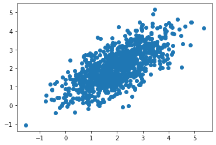
- matplotlib을 이용한 그림
x1,y1 = np.random.multivariate_normal([0,0],[[1,0],[0,1]],size=1000).T
x2,y2 = np.random.multivariate_normal([2,2],[[1,0.7],[0.7,1]],size=1000).Tplt.plot(x1,y1,'o')
plt.plot(x2,y2,'o')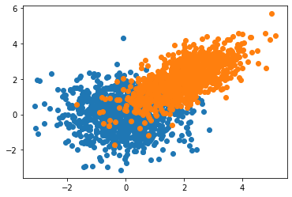
sns: aray
sns.scatterplot(data=None, x=x1, y=y1)
sns.scatterplot(data=None, x=x2, y=y2)<AxesSubplot:>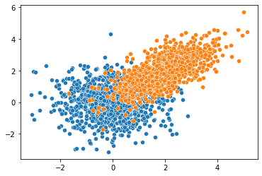
sns: wide df
pd.DataFrame({'x':x1,'y':y1})| x | y | |
|---|---|---|
| 0 | 0.053500 | -1.258803 |
| 1 | -0.517300 | -0.273907 |
| 2 | -0.938688 | 0.582421 |
| 3 | 1.017930 | -0.223879 |
| 4 | 0.827941 | 0.519745 |
| ... | ... | ... |
| 995 | 1.317776 | -0.898103 |
| 996 | -0.054884 | 0.290131 |
| 997 | -0.082623 | 0.971652 |
| 998 | -0.796771 | -0.140001 |
| 999 | 0.030602 | 0.435023 |
1000 rows × 2 columns
sns.scatterplot(data=pd.DataFrame({'x':x1,'y':y1}),x='x',y='y')
sns.scatterplot(data=pd.DataFrame({'x':x2,'y':y2}),x='x',y='y')
# #sns.scatterplot(data=None,x=x2,y=y2)<AxesSubplot:xlabel='x', ylabel='y'>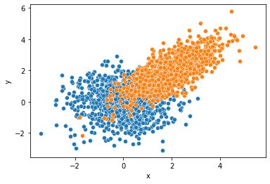
sns: long df
x=np.concatenate([x1,x2])
# np.array(list(x1) + list(x2))
# x1.tolist() + x2.tolist()
# 다 같은 코드이지만 cocaternate쓰는 방식이 제일 편하다
y=np.concatenate([y1,y2])
cat=['x1']*len(x1) + ['x2']*len(x2)df2=pd.DataFrame({'x':x, 'y':y, 'cat':cat})
df2| x | y | cat | |
|---|---|---|---|
| 0 | 0.082929 | 1.218634 | x1 |
| 1 | -0.019451 | -1.352701 | x1 |
| 2 | -1.253126 | 1.246169 | x1 |
| 3 | -0.343648 | 0.078081 | x1 |
| 4 | 0.479097 | -1.039999 | x1 |
| ... | ... | ... | ... |
| 1995 | 2.503038 | 2.350603 | x2 |
| 1996 | 1.940601 | 2.356207 | x2 |
| 1997 | 3.213965 | 2.769489 | x2 |
| 1998 | 1.203818 | -0.276493 | x2 |
| 1999 | 1.378763 | 1.914046 | x2 |
2000 rows × 3 columns
sns.scatterplot(data=df2, x='x', y='y', hue='cat')<AxesSubplot:xlabel='x', ylabel='y'>_files/figure-html/cell-16-output-2.png)
sns을 이용하여 matplotlib 액시즈에 그림 그리기 (\(\star\))
예제1
fig, ax = plt.subplots()
ax.plot([1,2,4,3])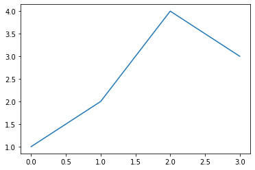
ax<AxesSubplot:>fig, mypltax = plt.subplots()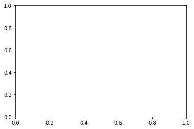
sns.scatterplot(data=df2, x='x', y='y', hue='cat', ax=mypltax)
# ax라는 변수를 넣자<AxesSubplot:xlabel='x', ylabel='y'>fig # 오 sns에 ax넣으니 fig에 sns가 들어옴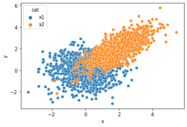
- seaborn에서 배우지 않은 내용을 matplotlib이용해서 사용가능함
fig, mypltax = plt.subplots()
sns.scatterplot(data=df2, x='x', y='y', hue='cat', ax=mypltax)
mypltax.set_title('coco babo')
fig.suptitle('coco ddong')Text(0.5, 0.98, 'coco ddong')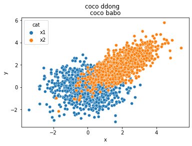
fig, ax = plt.subplots(1,3, figsize=(12,4))
ax[0].plot([1,2,4,3], '--o')
sns.scatterplot(x=x1, y=y1, ax=ax[1])
sns.scatterplot(x=x1, y=y1, ax=ax[2]) # 겹쳐그리자
sns.scatterplot(x=x2, y=y2, ax=ax[-1]) # 겹쳐그리자
ax[2].plot([1,2,4,3], '--m', lw=5)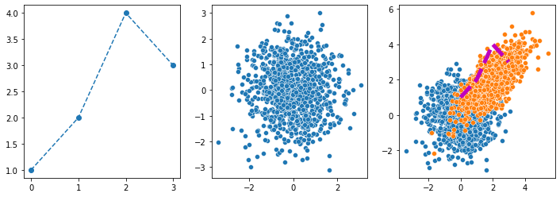
예제2
import cv2!wget https://upload.wikimedia.org/wikipedia/commons/0/08/Unequalized_Hawkes_Bay_NZ.jpg
img = cv2.imread('Unequalized_Hawkes_Bay_NZ.jpg',0) # 채널이 1개인 흑백이미지
!rm Unequalized_Hawkes_Bay_NZ.jpg --2023-02-25 16:17:39-- https://upload.wikimedia.org/wikipedia/commons/0/08/Unequalized_Hawkes_Bay_NZ.jpg
Resolving upload.wikimedia.org (upload.wikimedia.org)... 103.102.166.240, 2001:df2:e500:ed1a::2:b
Connecting to upload.wikimedia.org (upload.wikimedia.org)|103.102.166.240|:443... connected.
HTTP request sent, awaiting response... 200 OK
Length: 110895 (108K) [image/jpeg]
Saving to: ‘Unequalized_Hawkes_Bay_NZ.jpg’
Unequalized_Hawkes_ 100%[===================>] 108.30K 553KB/s in 0.2s
2023-02-25 16:17:40 (553 KB/s) - ‘Unequalized_Hawkes_Bay_NZ.jpg’ saved [110895/110895]
plt.imshow(img,vmin=0,vmax=255,cmap='gray')<matplotlib.image.AxesImage at 0x7f61e88d36d0>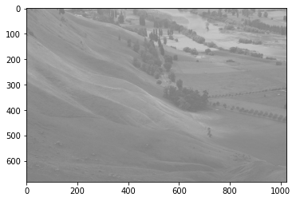
img2 = cv2.equalizeHist(img)img.shape(683, 1024)img.reshape(683*1024,1) # 컬럼벡터
img.reshape(683*1024) #길이가 1array([127, 145, 149, ..., 146, 145, 144], dtype=uint8)fig, ax = plt.subplots(2,2, figsize=(10,5))
ax[0,0].imshow(img,vmin=0,vmax=255,cmap='gray')
#ax[0,1].hist(img.reshape(-1))
sns.histplot(img.reshape(-1),ax=ax[0,1], bins=15, lw=0, kde=True, color='C1')
ax[1,0].imshow(img2,vmin=0,vmax=255,cmap='gray')
sns.histplot(img2.reshape(-1),ax=ax[1,1], bins=15, lw=0, kde=True, color='C1')<AxesSubplot:ylabel='Count'>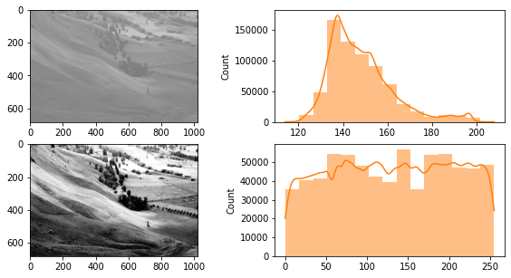
- ax[0,1]의 x축을 ax[1,1]의 x축과 맞춰서 비교해보고 싶다.
fig, ax = plt.subplots(2,2, figsize=(10,5))
ax[0,0].imshow(img,vmin=0,vmax=255,cmap='gray')
sns.histplot(img.reshape(-1),ax=ax[0,1], bins=15, lw=0, kde=True, color='C1')
ax[0,1].set_xlim(0,255)
ax[1,0].imshow(img2,vmin=0,vmax=255,cmap='gray')
sns.histplot(img2.reshape(-1),ax=ax[1,1], bins=15, lw=0, kde=True, color='C1')<AxesSubplot:ylabel='Count'>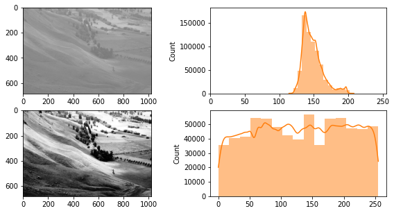
mpl 미세먼지 팁(2)
축 간격조정
import matplotlib as mplfig, ax = plt.subplots()
ax.plot([(xi/30)**2 for xi in range(30)],'--o')
ax.xaxis.set_major_locator(mpl.ticker.MultipleLocator(3)) # 큰 눈금간격을 3으로
ax.xaxis.set_minor_locator(mpl.ticker.MultipleLocator(1)) # 작은 눈금간격을 1로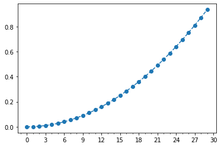
축 삭제
fig, ax = plt.subplots()
ax.plot([(xi/30)**2 for xi in range(30)],'--o')
ax.xaxis.set_major_locator(mpl.ticker.NullLocator()) # x축 눈금삭제
ax.yaxis.set_major_locator(mpl.ticker.NullLocator()) # y축 눈금삭제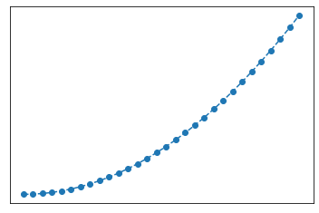
축 범위조정
fig, ax = plt.subplots()
ax.plot([(xi/30)**2 for xi in range(30)],'--o')
ax.set_ylim(-1,2)
ax.set_xlim(-5,35)
#plt.ylim(-1,2) 위 ax와 같은 코드
#plt.xlim(-5,35)(-5.0, 35.0)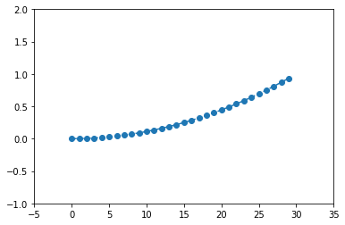
gcf, gca
plt.plot([1,2,3,2])
fig=plt.gcf()
# gcf: get current figure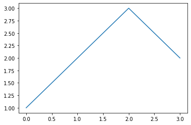
fig.suptitle('suptitle')Text(0.5, 0.98, 'suptitle')fig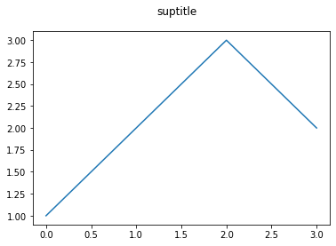
ax = fig.gca()
# gca: get current axesax.set_title('title')
fig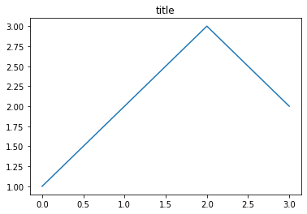